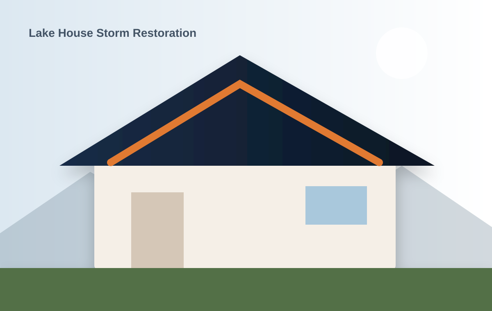
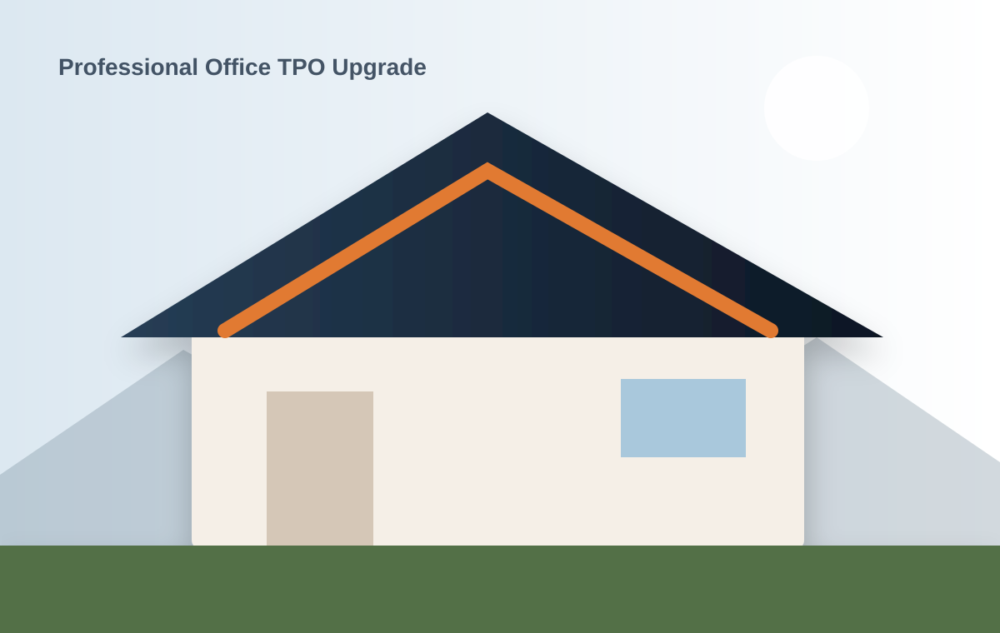
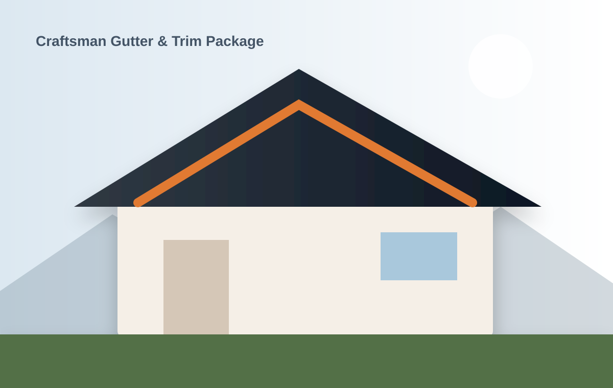

Stafford Colonial Roof System
Full tear-off, deck repair, ventilation correction, and architectural shingle upgrade.
Representative roofing, metal, storm, siding, gutter, and commercial work across Central Virginia.
Full tear-off, deck repair, ventilation correction, and architectural shingle upgrade.

24-gauge standing seam roof with custom chimney, valley, and wall flashing.

Siding, soffit, fascia, trim, gutters, and coordinated exterior color package.

Emergency dry-in followed by code-compliant roof-system replacement.

Insulation correction, tapered drainage, and 60-mil TPO roof system.

Six-inch gutters, leaf protection, fascia repair, and PVC trim details.
The homeowners wanted crisp standing-seam lines, but the existing geometry included intersecting valleys, masonry, and low-slope transitions.
IronPeak created a shop-detailed flashing package, corrected the roof-to-wall transition, and installed a vented 24-gauge system with concealed fasteners.
Let us evaluate the details that determine performance, longevity, and final cost.